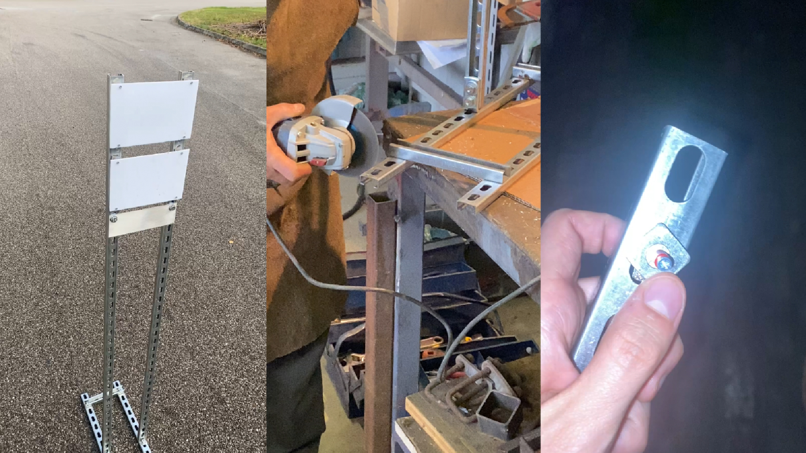
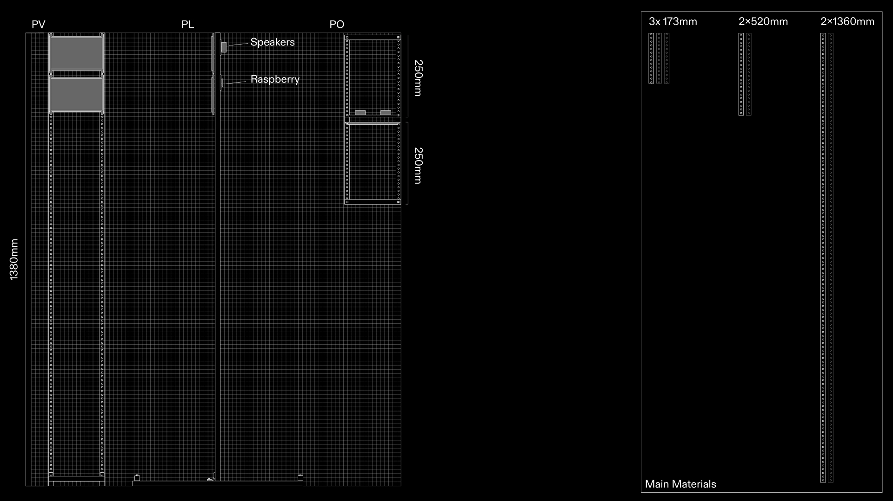

Trail cameras record animals in their natural habitats. Designed for research and wildlife monitoring, their footage has become popular social media content. Once published, animals become digital entities, recontextualized within an online ecosystem.
The project examines 273 trail camera videos shared on Italian social platforms—Instagram, Facebook, TikTok and YouTube—between 2021 and 2024. The hashtags in their descriptions become tools of human categorization.
The installation presents the animal in two ways: as a digital object and as an inhabitant of a digital forest. Two front screens and a projected backdrop make these layers physical. The upper screen plays over two hours of trail camera footage with its original audio; the lower one displays platform, publication date, time and user data.
The rear projection displays a network of hashtags connected to the animals in the footage. Its audio combines sounds from every video featuring the animal currently on screen.

The resulting network evolves like a digital forest, bringing human perceptions and animal presence together over time.


The custom-built structure supports two front-facing screens while housing the Raspberry Pi and speakers at the back.